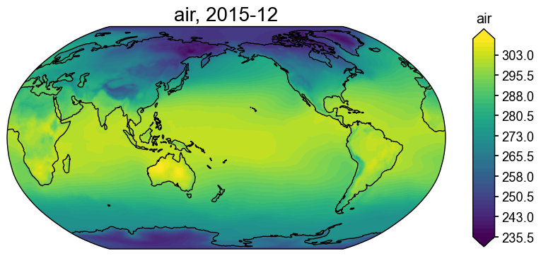
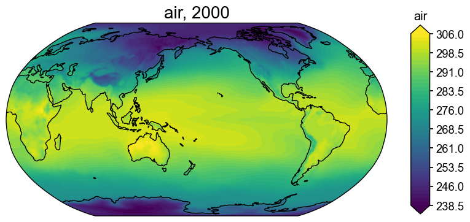

[10]:
import xarray as xr
import cfr
[12]:
ds = cfr.ClimateField().fetch('20CRv3/tas', return_ds=True)
ds
>>> The target file seems existed at: ./data/air.2m.mon.mean.nc . Loading from it instead of downloading ...
[12]:
<xarray.Dataset>
Dimensions: (lat: 181, lon: 360, time: 2160, nbnds: 2)
Coordinates:
* lat (lat) float32 -90.0 -89.0 -88.0 -87.0 ... 87.0 88.0 89.0 90.0
* lon (lon) float32 0.0 1.0 2.0 3.0 4.0 ... 356.0 357.0 358.0 359.0
* time (time) object 1836-01-01 00:00:00 ... 2015-12-01 00:00:00
Dimensions without coordinates: nbnds
Data variables:
time_bnds (time, nbnds) float64 ...
air (time, lat, lon) float32 ...
Attributes: (12/24)
Conventions: CF-1.2
title: Monthly NOAA/CIRES/DOE 20th Century Reanalysis V3
comments: Data are from \nNOAA/CIRES/DOE 20th Century Re...
standard_name_vocabulary: NetCDF Climate and Forecast (CF) Metadata Conv...
license: These data are available free of charge under ...
spatial_resolution: 1.0 degree
... ...
citation1: Slivinski, L. C, G. P. Compo, J. S. Whitaker, ...
References: https://www.psl.noaa.gov/data/gridded/data.20t...
creator_name: NOAA/PSL
institution: NOAA Physical Sciences Laboratory & CU/CIRES \...
contact: psl.data@noaa.gov
citation: Compo,G.P. <https://www.psl.noaa.gov/people/gi...[14]:
da = ds['air']
da
[14]:
<xarray.DataArray 'air' (time: 2160, lat: 181, lon: 360)>
[140745600 values with dtype=float32]
Coordinates:
* lat (lat) float32 -90.0 -89.0 -88.0 -87.0 -86.0 ... 87.0 88.0 89.0 90.0
* lon (lon) float32 0.0 1.0 2.0 3.0 4.0 ... 355.0 356.0 357.0 358.0 359.0
* time (time) object 1836-01-01 00:00:00 ... 2015-12-01 00:00:00
Attributes: (12/15)
long_name: Monthly Air Temperature at 2 m
cell_methods: time: mean (monthly from 3-hourly values)
units: degK
GRIB_name: TMP
var_desc: Air temperature
dataset: NOAA/CIRES/DOE 20th Century Reanalysis version 3si-mo ...
... ...
standard_name: air_temperature
valid_range: [100. 500.]
statistic_method: Ensemble mean is calculated by averaging over all 80 e...
GridType: Cylindrical Equidistant Projection Grid
datum: wgs84
actual_range: [213.11884 316.28433][17]:
da_out = da.mean('time', keep_attrs=True)
da_out
[17]:
<xarray.DataArray 'air' (lat: 181, lon: 360)>
array([[232.62236, 232.62236, 232.62236, ..., 232.62236, 232.62236,
232.62236],
[232.93562, 232.92255, 232.90932, ..., 232.97322, 232.96082,
232.9482 ],
[233.02043, 232.97849, 232.93764, ..., 233.17435, 233.12233,
233.07047],
...,
[257.07626, 257.0815 , 257.08615, ..., 257.05408, 257.06158,
257.06888],
[256.9212 , 256.92313, 256.9247 , ..., 256.9132 , 256.916 ,
256.91843],
[256.8098 , 256.8098 , 256.8098 , ..., 256.8098 , 256.8098 ,
256.8098 ]], dtype=float32)
Coordinates:
* lat (lat) float32 -90.0 -89.0 -88.0 -87.0 -86.0 ... 87.0 88.0 89.0 90.0
* lon (lon) float32 0.0 1.0 2.0 3.0 4.0 ... 355.0 356.0 357.0 358.0 359.0
Attributes: (12/15)
long_name: Monthly Air Temperature at 2 m
cell_methods: time: mean (monthly from 3-hourly values)
units: degK
GRIB_name: TMP
var_desc: Air temperature
dataset: NOAA/CIRES/DOE 20th Century Reanalysis version 3si-mo ...
... ...
standard_name: air_temperature
valid_range: [100. 500.]
statistic_method: Ensemble mean is calculated by averaging over all 80 e...
GridType: Cylindrical Equidistant Projection Grid
datum: wgs84
actual_range: [213.11884 316.28433][18]:
fd = cfr.ClimateField().fetch('20CRv3/tas', vn='air')
fig, ax = fd[-1].plot()
>>> The target file seems existed at: ./data/air.2m.mon.mean.nc . Loading from it instead of downloading ...

[19]:
fd_DJF_ann = fd.annualize(months=[12, 1, 2])
fd_DJF_ann.da
[19]:
<xarray.DataArray 'air' (time: 181, lat: 181, lon: 360)>
array([[[241.27834, 241.27834, 241.27834, ..., 241.27834, 241.27834,
241.27834],
[241.63933, 241.62373, 241.60962, ..., 241.67535, 241.66052,
241.65143],
[241.86505, 241.82776, 241.78574, ..., 242.00128, 241.95187,
241.90952],
...,
[241.46164, 241.46838, 241.47284, ..., 241.43837, 241.44759,
241.45453],
[241.28314, 241.28586, 241.28674, ..., 241.2735 , 241.27707,
241.28041],
[241.1747 , 241.1747 , 241.1747 , ..., 241.1747 , 241.1747 ,
241.1747 ]],
[[242.79997, 242.79997, 242.79997, ..., 242.79997, 242.79997,
242.79997],
[243.1856 , 243.17053, 243.1545 , ..., 243.22314, 243.21016,
243.1967 ],
[243.39888, 243.36232, 243.32616, ..., 243.52504, 243.48448,
243.44243],
...
[248.54814, 248.5658 , 248.58247, ..., 248.49107, 248.50761,
248.52946],
[248.26556, 248.27287, 248.28058, ..., 248.23962, 248.24785,
248.25597],
[248.12672, 248.12672, 248.12672, ..., 248.12672, 248.12672,
248.12672]],
[[248.58467, 248.58467, 248.58467, ..., 248.58467, 248.58467,
248.58467],
[249.2536 , 249.24072, 249.22662, ..., 249.28911, 249.27904,
249.26653],
[249.66452, 249.63425, 249.61409, ..., 249.75404, 249.72542,
249.69354],
...,
[247.84918, 247.85927, 247.87419, ..., 247.79878, 247.81813,
247.83426],
[247.5238 , 247.52663, 247.52943, ..., 247.5117 , 247.51894,
247.5214 ],
[247.36772, 247.36772, 247.36772, ..., 247.36772, 247.36772,
247.36772]]], dtype=float32)
Coordinates:
* lat (lat) float32 -90.0 -89.0 -88.0 -87.0 -86.0 ... 87.0 88.0 89.0 90.0
* lon (lon) float32 0.0 1.0 2.0 3.0 4.0 ... 355.0 356.0 357.0 358.0 359.0
* time (time) int64 1836 1837 1838 1839 1840 ... 2012 2013 2014 2015 2016
Attributes: (12/16)
long_name: Monthly Air Temperature at 2 m
cell_methods: time: mean (monthly from 3-hourly values)
units: degK
GRIB_name: TMP
var_desc: Air temperature
dataset: NOAA/CIRES/DOE 20th Century Reanalysis version 3si-mo ...
... ...
valid_range: [100. 500.]
statistic_method: Ensemble mean is calculated by averaging over all 80 e...
GridType: Cylindrical Equidistant Projection Grid
datum: wgs84
actual_range: [213.11884 316.28433]
annualized: 1[22]:
fig, ax = fd_DJF_ann['2000'].plot()

[ ]: